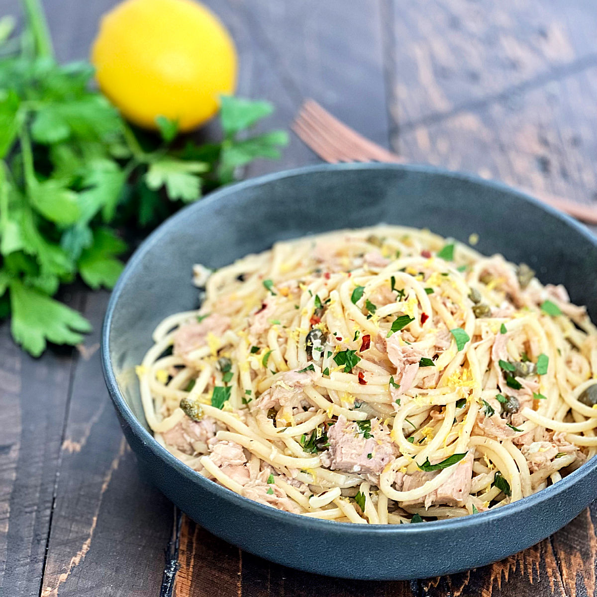

Back
Tuna Pasta

Description
This is a simple recipe but quite hard to beat after a long day. With a healthy amount of protein, a satisfying mouth-feel,
and a zesty flavor overall, you'll be glad you have leftovers for lunch. Why is it called Tuna Pasta, you ask? Because of
the two main componets. Tuna. And. Pasta. Tuna Pasta.
Ingredients
- Thin Spaghetti
- One Yellow Onion
- Bell Pepper
- One Lemon
- Garlic
- Olive Oil
- Butter
- Basil (fresh if you can get it)
- Salt & Pepper
- Grated Parmesan
- Lemon Pepper
Instructions
- Bring water to a boil for the pasta
- Small-dice the onion and the bell pepper
- Mince four cloves of garlic
- With a little olive oil, place the onion in a skillet, medium heat; add bell pepper after two minutes
- Boil the pasta, I always throw in too much so use your best judgment
- Right before the onion and pepper char, add and mix in the tuna (one or two cans depending on preference)
- Throw a little butter into the skillet; mix
- Squeeze half of the lemon into the skillet; add salt & pepper
- Strain the pasta being sure to retain some of the starchy water
- Add the pasta to the skillet, but keep the ratio of pasta:"stuff" desireable
- Add in two tablespoons of the reserved starchy water
- Squeeze in the rest of the lemon, mix, and let it come together, like The Beatles
- Plate the mixture in your third-favorite bowl; top with cheese, basil, and lemon pepper to taste
Back